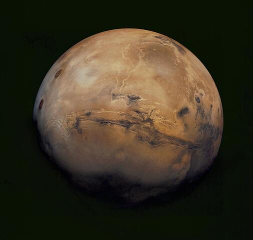

Satélite natural
Lua
Nossa vizinha no espaço tem uma superfície marcada por crateras. Foi o primeiro mundo além da Terra visitado por seres humanos.
Um convite à descoberta
Há um Universo de descobertas lá fora. Conheça outros mundos e as missões que nos ajudam a ir cada vez mais longe.
Conheça os destinos
01 / Conheça nossa vizinhança
Quatro mundos do Sistema Solar. Quatro motivos para olhar para o céu.
Satélite natural
Nossa vizinha no espaço tem uma superfície marcada por crateras. Foi o primeiro mundo além da Terra visitado por seres humanos.

Planeta rochoso
O planeta vermelho abriga vulcões e grandes cânions. Robôs exploram seu solo em busca de pistas sobre o passado do planeta.

Gigante gasoso
O maior planeta do Sistema Solar possui faixas de nuvens e enormes tempestades, como a famosa Grande Mancha Vermelha.

Gigante gasoso
Seus anéis são formados por incontáveis fragmentos de gelo e rocha. Esse gigante tem luas que também despertam nossa curiosidade.
Imagens ilustrativas dos destinos, sem escala de tamanho ou distância entre eles.
02 / Ciência que vai mais longe
Como são os outros mundos? Sondas, robôs e astronautas levam essa curiosidade para além da Terra. Cada missão traz imagens e dados que ajudam a entender nosso lugar no Universo.
Os primeiros passos humanos na superfície da Lua.
O início de uma viagem para estudar Saturno, seus anéis e suas luas.
Um laboratório sobre rodas chega a Marte para investigar seu ambiente no passado.
03 / Aprender explorando
Explore o Universo é um projeto educacional que une astronomia e desenvolvimento web. Um ponto de partida para aprender, fazer perguntas e construir novas descobertas em sala de aula.